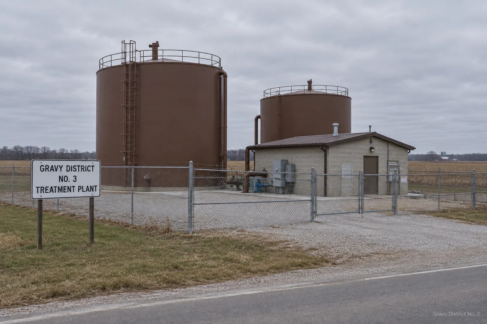
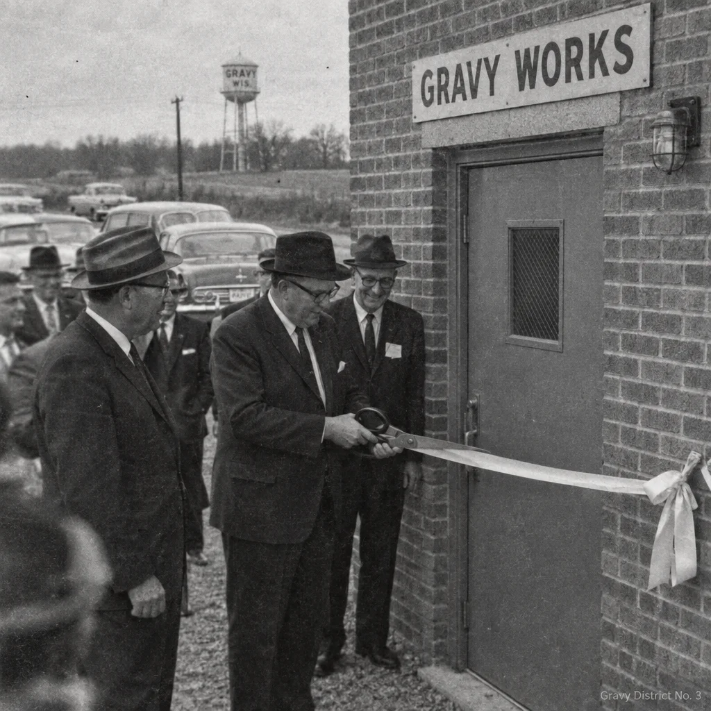
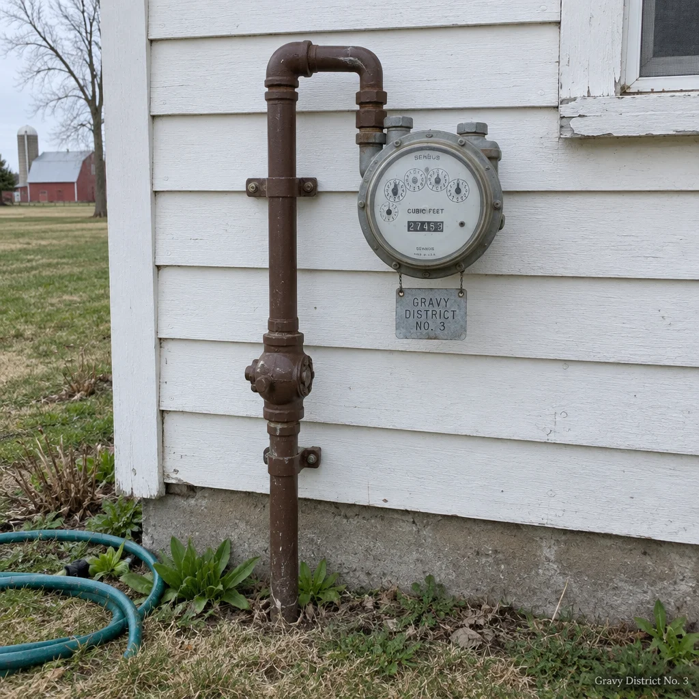

Your public gravy utility
Gravy District No. 3 is the municipal gravy utility for the Townships of Butternut Falls, Roux Prairie, and Lower Giblet in rural Wisconsin. Established by county referendum in 1962, the District delivers hot municipal gravy to 4,100 households and 63 commercial accounts through 61 miles of insulated brown mains. Turkey and beef are separate systems. They have always been separate systems.
About your District
The District operates one treatment and distribution plant on County Road H, two elevated storage tanks, four booster stations, and a fleet of three tankers for areas the mains do not reach. Gravy is produced in continuous batches, held at 178 degrees Fahrenheit, and screened twice before it enters the mains. Residential meters are read on the last Tuesday of the month.

The District is governed by the five-member Board of Gravy Commissioners, elected to staggered six-year terms. The Board meets on the second Tuesday of each month at 6:00 PM in the District office. Meetings are open to the public and routinely run four hours due to public comment. Agendas and minutes are posted here.
A short history


Before 1962, gravy in the three townships was produced privately, at home, with uneven results. The referendum passed 611 to 149 after the dry Thanksgiving of 1961, which older residents still discuss. The original works served 200 households on a single unseparated main. Following the events of 1967, the turkey and beef systems were physically separated, and cross-connection became a Class B ordinance violation. The District has operated without a full systemwide interruption since 1988.